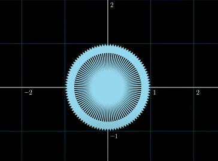
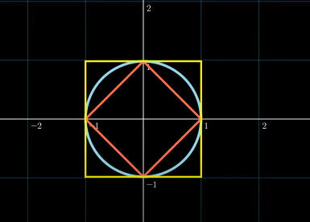
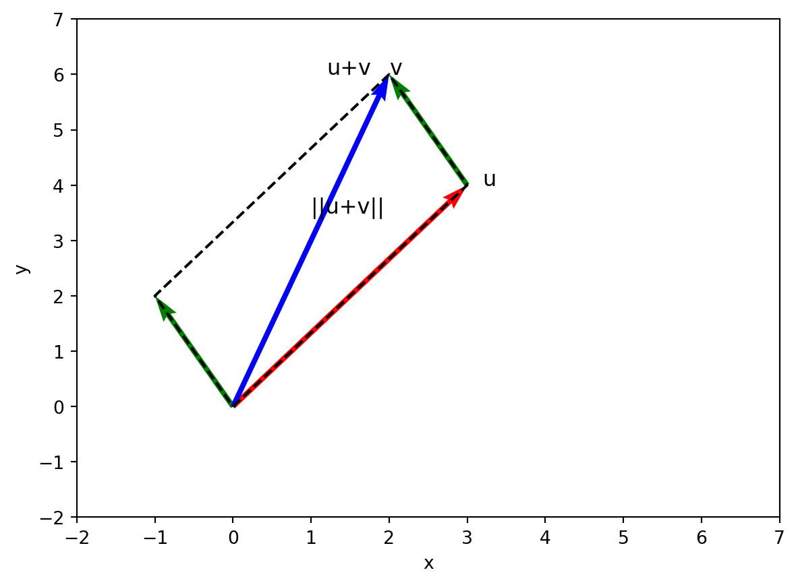

Code
```{python}
v = np.array([1, 2, 3])
w = np.array([4, 5, 6])
distance = np.linalg.norm(v - w)
print(distance)
```5.196152422706632Introduction, Inner Product, Dot Product
Basic Linear Algebra
Kwangmin Kim
March 30, 2023
The norm of a vector \(\mathbf{x}\) is a non-negative scalar value that represents the size or length of the vector. The norm is denoted by \(||\mathbf{x}||\) and satisfies the following properties:
Suppose we have a vector \(\mathbf{x}=\begin{bmatrix}1 \\ -2 \\ 2\end{bmatrix}\). We can find its Euclidean norm as follows:
\[ ||\mathbf x||=\sqrt{1^2+(-2)^2+2^2}=\sqrt{9}=3 \]
Therefore, the norm of \(\mathbf{x}\) is 3.
There are several types of norms:
Manhattan Norm or Absolute Norm or \(l_1\)-norm \[ \begin{equation*} ||\mathbf{x}||_{l_1} = \sum_{i=1}^{n} |x_i| \end{equation*} \] where \(\mathbf{x}\) is a vector of length \(n\). Example: For \(\mathbf{x} = [1, -2, 3]\), \(||\mathbf{x}||_{l_1} = |1| + |-2| + |3| = 6\).
Euclidean Norm or \(l_2\)-norm \[ \begin{equation*} ||\mathbf{x}||_{l_2} = \sqrt{\sum_{i=1}^{n} x_i^2} \end{equation*} \] where \(\mathbf{x}\) is a vector of length \(n\). Example: For \(\mathbf{x} = [1, 2, 3]\), \(||\mathbf{x}||_{l_2} = \sqrt{1^2 + 2^2 + 3^2} = \sqrt{14}\).

For \(p \geq 1\), \[ \begin{equation*} ||\mathbf{x}||_p = (\sum_{i=1}^n |x_i|^p)^{\frac{1}{p}} \end{equation*} \] where \(\mathbf{x}\) is a vector of length \(n\). Example: For \(\mathbf{x} = [1, 2, 3]\), \(||\mathbf{x}||_{l_p} = \sqrt{1^p + 2^p + 3^p}\).

A unit vector is a vector that has a magnitude of 1. A unit vector can be obtained by dividing a non-zero vector \(\mathbf{v}\) by its magnitude \(||\mathbf{v}||\),
\[ \begin{equation*} \mathbf{\hat{v}} = \frac{\mathbf{v}}{||\mathbf{v}||} \end{equation*} \]
where \(\mathbf{\hat{v}}\) is the unit vector in the direction of \(\mathbf{v}\).
A unit vector can be used to focus on a direction with no interest in the size of the vector.
For example, let \(\mathbf{v} = \begin{bmatrix} 1 \ 2 \end{bmatrix}\) be a non-zero vector in \(\mathbb{R}^2\). The magnitude of \(\mathbf{v}\) is \(||\mathbf{v}|| = \sqrt{1^2 + 2^2} = \sqrt{5}\). Therefore, a unit vector in the direction of \(\mathbf{v}\) is:
\[ \begin{equation*} \mathbf{\hat{v}} = \frac{\mathbf{v}}{||\mathbf{v}||} = \frac{1}{\sqrt{5}}\begin{bmatrix} 1 \\ 2 \end{bmatrix} = \begin{bmatrix} \frac{1}{\sqrt{5}} \\ \frac{2}{\sqrt{5}} \end{bmatrix} \end{equation*} \]
Thus, \(\begin{bmatrix} \frac{1}{\sqrt{5}} \\ \frac{2}{\sqrt{5}} \end{bmatrix}\) is a unit vector in the direction of \(\mathbf{v}\).
A standard unit vector is denoted as \(\mathbf{e}_i\), where \(i\) represents the coordinate axis. For example, in 2D space, we have \(\mathbf{e}_1\) representing the unit vector along the \(x\)-axis and \(\mathbf{e}_2\) representing the unit vector along the \(y\)-axis.
The distance between two vectors can be computed using a distance metric, such as the Euclidean distance or the Manhattan distance.
The Euclidean distance between two vectors \(\mathbf{v}\) and \(\mathbf{w}\) of length \(n\) can be calculated using the following formula:
\[ \begin{aligned} \text{distance}(\mathbf{v}, \mathbf{w}) &= d(\mathbf{v},\mathbf{w})=||\mathbf{v}-\mathbf{w}||= \sqrt{\sum_{i=1}^{n} (v_i - w_i)^2}\\ \end{aligned} \]
5.196152422706632The Manhattan distance (also known as the city block distance or L1 distance) between two vectors \(\mathbf{v}\) and \(\mathbf{w}\) of length \(n\) can be calculated using the following formula:
\[ \text{distance}(\mathbf{v}, \mathbf{w}) = \sum_{i=1}^{n} |v_i - w_i| \]
Dot product is also known as scalar product or inner product.
The dot product of two vectors is the sum of the products of their corresponding components (a.k.a inner product & scalar product). If \(\textbf{a}\) and \(\textbf{b}\) are two vectors of the same dimension, then their dot product \(c = \textbf{a} \cdot \textbf{b}\) is a scalar given by the formula:
\[ \begin{align*} c&=\textbf{a}\cdot \textbf{b}\\ &= \sum_{i=1}^{n}a_ib_i \end{align*} \]
Commutativity: \(\mathbf{v} \cdot \mathbf{w} = \mathbf{w} \cdot \mathbf{v}\)
Distributivity over vector addition: \(\mathbf{v} \cdot (\mathbf{w} + \mathbf{u}) = \mathbf{v} \cdot \mathbf{w} + \mathbf{v} \cdot \mathbf{u}\)
Scalar associativity: \((c \mathbf{v}) \cdot \mathbf{w} = c (\mathbf{v} \cdot \mathbf{w}) = \mathbf{v} \cdot (c \mathbf{w})\)
Linearity: \((c \mathbf{v} + d \mathbf{w}) \cdot \mathbf{u} = c (\mathbf{v} \cdot \mathbf{u}) + d (\mathbf{w} \cdot \mathbf{u})\)
Orthogonality: \(\mathbf{v} \cdot \mathbf{w} = 0 \text{ if and only if } \mathbf{v} \perp \mathbf{w}\)
simmilarity
The second cosine rule in linear algebra, also known as the Law of Cosines, relates the dot product of vectors to their magnitudes and the angle between them.
\[ \begin{align*} \cos\theta &= \frac{b^2+c^2-a^2}{2bc} \rightarrow \mathbf{v} \cdot \mathbf{w} = \|\mathbf{v}\| \|\mathbf{w}\| \cos\theta \end{align*} \]
The geometric meaning of the dot product
\[ \begin{aligned} \cos\theta&=\frac{||\mathbf{v}_2||^2+||\mathbf{v}_1||^2-||\mathbf{v}_2-\mathbf{v}_1||}{2||\mathbf{v}_2||||\mathbf{v}_1||} \\ ||\mathbf{v}||&=\sqrt{\mathbf{v}\cdot \mathbf{v}}\\ ||\mathbf{v}_2||^2+||\mathbf{v}_1||^2-||\mathbf{v}_2-\mathbf{v}_1||&=(\sqrt{\mathbf{v}_2\cdot \mathbf{v}_2})^2+(\sqrt{\mathbf{v}_1\cdot \mathbf{v}_1})^2-(\sqrt{(\mathbf{v}_2-\mathbf{v}_1)\cdot (\mathbf{v}_2-\mathbf{v}_1)})^2\\ &=\mathbf{v}_2\cdot \mathbf{v}_2+\mathbf{v}_1\cdot \mathbf{v}_1-(\mathbf{v}_2-\mathbf{v}_1)\cdot (\mathbf{v}_2-\mathbf{v}_1)\\ &=\mathbf{v}_2\cdot \mathbf{v}_2+\mathbf{v}_1\cdot \mathbf{v}_1-\mathbf{v}_2\cdot \mathbf{v}_2+2\mathbf{v}_1\cdot \mathbf{v}_2-\mathbf{v}_1\cdot \mathbf{v}_1\\ &=2\mathbf{v}_1\cdot \mathbf{v}_2 \\ \cos\theta&=\frac{\mathbf{v}_1\cdot \mathbf{v}_2}{||\mathbf{v}_2||||\mathbf{v}_1||}\\ \mathbf{v}_1\cdot \mathbf{v}_2&=||\mathbf{v}_1||||\mathbf{v}_2||\cos\theta \end{aligned} \]
the dot product \(\ge 0\) if \(0\le \theta\le \frac{\pi}{2}\)
the dot product \(< 0\) if \(\frac{\pi}{2}< \theta\le \pi\)
The geometric interpretation of the dot product is that it measures the projection of one vector onto another. When the dot product is positive, it means the vectors are pointing in a similar direction, and when it is negative, it means they are pointing in opposite directions. The magnitude of the dot product provides a measure of how parallelness, aligned or similar the vectors are.
Projection
\[ \begin{aligned} \mathbf{v_1}\cdot \mathbf{v_2}&=||\mathbf{w}||||\mathbf{v_2}||\\ \mathbf w&=\text{proj}_{\mathbf v_2}\mathbf v_1\\ &=||\mathbf{w}||\mathbf{u}_\mathbf{w} \quad (\because \text{the univt vector of } \mathbf{w} = \mathbf{u}_w)\\ \text{the unit vector of } \mathbf{w} &= \frac{\mathbf{v}_2}{||\mathbf{v}_2||} \quad(\because \text{the direction of } \mathbf{w} = \text{the direction of } \mathbf{v_2}) \\ \mathbf w&=\text{proj}_{\mathbf v_2}\mathbf v_1\\ &=\frac{\mathbf v_1 \cdot \mathbf v_2}{||\mathbf v_2||} \frac{\mathbf v_2}{||\mathbf v_2||} \\ &=\frac{\mathbf v_1 \cdot \mathbf v_2}{||\mathbf v_2||^2} \mathbf v_2 \\ &=\frac{\mathbf v_1 \cdot \mathbf v_2}{\mathbf{v}_2\cdot \mathbf{v}_2}\mathbf{v}_2 \quad (\because ||\mathbf v_2||=\sqrt{\mathbf{v}_2\cdot \mathbf{v}_2}) \end{aligned} \]
Cauchy-Schwarz Inequality
\[ \begin{aligned} (ax+by)^2 &\le (a^2+b^2)(x^2+y^2)\\ |\langle \mathbf u,\mathbf v\rangle| = |\mathbf{u}\cdot\mathbf{v}| &\le ||\mathbf{u}|| ||\mathbf{v} || \quad (\text{where }\mathbf{u}=(a,b), \quad \mathbf{v}=(x,y))\\ &\text{putting the absolute value is because the dot product could be negative} \\ \text{Proof)} \mathbf{u}\cdot\mathbf{v}&= ||\mathbf{u}|| ||\mathbf{v} ||\cos\theta \\ -1 \le \mathbf{u}\cdot\mathbf{v}&= ||\mathbf{u}|| ||\mathbf{v} || \le 1 \\ -||\mathbf{u}|| ||\mathbf{v} || \le \mathbf{u}\cdot\mathbf{v}& \le ||\mathbf{u}|| ||\mathbf{v} || \\ |\mathbf{u}\cdot\mathbf{v}| & \le ||\mathbf{u}|| ||\mathbf{v}|| \end{aligned} \]
\[ \begin{aligned} ||\mathbf{u} + \mathbf{v}|| &\le ||\mathbf{u}|| + ||\mathbf{v}|| \\ ||\mathbf{u} + \mathbf{v}||^2 &= (\mathbf{u}+\mathbf{v})\cdot(\mathbf{u}+\mathbf{v}) \\ &= \mathbf{u}\cdot\mathbf{u}+2\mathbf{u}\cdot\mathbf{v}+\mathbf{v}\cdot\mathbf{v}\\ &\le \mathbf{u}\cdot\mathbf{u}+2|\mathbf{u}\cdot\mathbf{v}|+\mathbf{v}\cdot\mathbf{v} \\ &(\because \mathbf{u}\cdot\mathbf{v} \text{ is a scalar and could be negative}) \end{aligned} \]
```{python}
u = [3, 4]
v = [-1, 2]
# Plot the vectors
plt.quiver(0, 0, u[0], u[1], angles='xy', scale_units='xy', scale=1, color='r')
plt.quiver(0, 0, v[0], v[1], angles='xy', scale_units='xy', scale=1, color='g')
plt.quiver(u[0], u[1], -1, 2, angles='xy', scale_units='xy', scale=1, color='g')
plt.quiver(0, 0, u[0]+v[0], u[1]+v[1], angles='xy', scale_units='xy', scale=1, color='b')
plt.text(u[0]+0.2, u[1], 'u', fontsize=12)
plt.text(u[0]+v[0], u[1]+v[1], 'v', fontsize=12)
plt.text(u[0]+v[0]-0.8, u[1]+v[1], 'u+v', fontsize=12)
plt.xlabel('x')
plt.ylabel('y')
plt.xlim(-2, 7)
plt.ylim(-2, 7)
plt.plot([0, u[0], u[0]+v[0], v[0], 0], [0, u[1], u[1]+v[1], v[1], 0], 'k--')
plt.text((u[0]+v[0])/2, (u[1]+v[1])/2+0.5, '||u+v||', fontsize=12)
plt.show()
```
In general, an inner product is a mathematical operation that takes two vectors and produces a scalar. It satisfies certain properties, such as being linear in the first argument, conjugate linear in the second argument, and positive-definite. In other words, an inner product is a bilinear form that satisfies the following properties for all vectors \(\mathbf{x}\), \(\mathbf{y}\), and \(\mathbf{z}\), and all scalars \(a\) and \(b\):